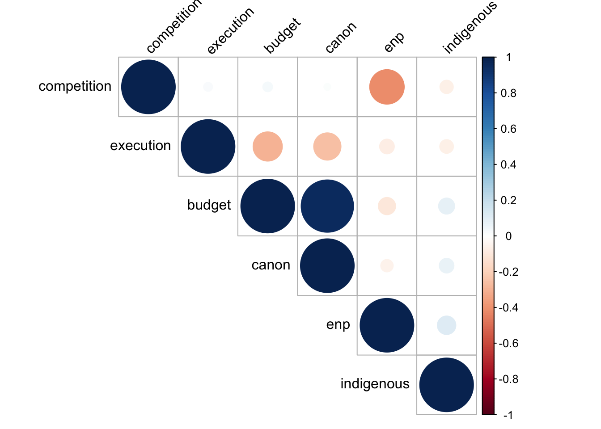
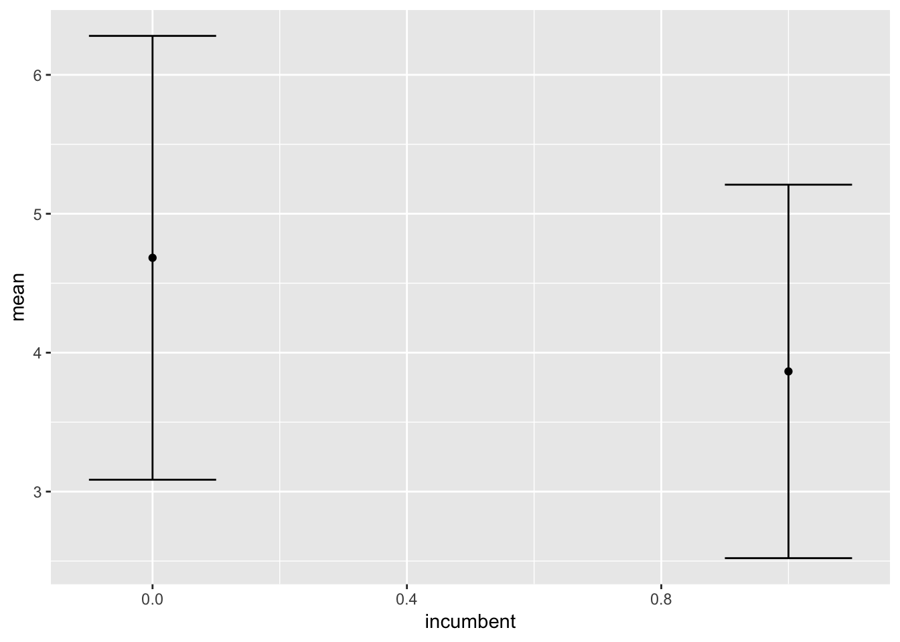

Bivariado
0.1 Correlaciones
Tomamos la base de datos del artículo:
library(rio)
recall<-import("https://github.com/jincio/Imperfect_recall/raw/master/recalldataset.dta")## [1] "idmun" "region" "voters" "request"
## [5] "vote" "removal" "enp" "competition"
## [9] "indigenous" "execution" "budget" "canon"
## [13] "previous" "conflict" "incumbent" "share"
## [17] "rural" "period" "days" "firstexecution"
## [21] "female" "poverty2" "investment"Existirá correlación entre el la competitividad y las regalias mineras
## [1] -0.2587664## [1] -0.2253771##
## Pearson's product-moment correlation
##
## data: recall$canon and recall$execution
## t = -18.739, df = 4893, p-value < 2.2e-16
## alternative hypothesis: true correlation is not equal to 0
## 95 percent confidence interval:
## -0.2847175 -0.2324364
## sample estimates:
## cor
## -0.2587664## enp competition indigenous execution budget
## enp 1.00000000 -0.41369220 0.11892046 -0.07563594 -0.10379910
## competition -0.41369220 1.00000000 -0.06243175 0.02768176 0.03305790
## indigenous 0.11892046 -0.06243175 1.00000000 -0.06564584 0.08987345
## execution -0.07563594 0.02768176 -0.06564584 1.00000000 -0.29726150
## budget -0.10379910 0.03305790 0.08987345 -0.29726150 1.00000000
## canon -0.05402253 0.01635722 0.07501678 -0.25869880 0.95052677
## canon
## enp -0.05402253
## competition 0.01635722
## indigenous 0.07501678
## execution -0.25869880
## budget 0.95052677
## canon 1.00000000## enp competition indigenous execution budget canon
## enp 1.00 -0.42 0.13 -0.08 -0.15 -0.05
## competition -0.42 1.00 -0.07 0.03 0.04 0.02
## indigenous 0.13 -0.07 1.00 -0.07 0.08 0.08
## execution -0.08 0.03 -0.07 1.00 -0.30 -0.26
## budget -0.15 0.04 0.08 -0.30 1.00 0.95
## canon -0.05 0.02 0.08 -0.26 0.95 1.00
##
## n
## enp competition indigenous execution budget canon
## enp 6558 6555 6533 4895 6518 4917
## competition 6555 6555 6530 4892 6515 4914
## indigenous 6533 6530 6533 4878 6498 4900
## execution 4895 4892 4878 4895 4895 4895
## budget 6518 6515 6498 4895 6518 4895
## canon 4917 4914 4900 4895 4895 4917
##
## P
## enp competition indigenous execution budget canon
## enp 0.0000 0.0000 0.0000 0.0000 0.0001
## competition 0.0000 0.0000 0.0448 0.0015 0.2560
## indigenous 0.0000 0.0000 0.0000 0.0000 0.0000
## execution 0.0000 0.0448 0.0000 0.0000 0.0000
## budget 0.0000 0.0015 0.0000 0.0000 0.0000
## canon 0.0001 0.2560 0.0000 0.0000 0.00000.1.1 Correlaciones por grupo usando dplyr
library(dplyr)
recall %>% group_by(period) %>%
do(as.data.frame(cor(.[,c("canon","budget")], method="spearman", use="pairwise.complete.obs")))## # A tibble: 8 x 3
## # Groups: period [4]
## period canon budget
## <dbl> <dbl> <dbl>
## 1 1 NA NA
## 2 1 NA 1
## 3 2 1 0.855
## 4 2 0.855 1
## 5 3 1 0.767
## 6 3 0.767 1.000
## 7 4 1 0.666
## 8 4 0.666 10.2 Pruebas T
Pruebas de diferencias de medias:
##
## Welch Two Sample t-test
##
## data: recall$enp by recall$incumbent
## t = 18.428, df = 2060.1, p-value < 2.2e-16
## alternative hypothesis: true difference in means is not equal to 0
## 95 percent confidence interval:
## 0.7307678 0.9048306
## sample estimates:
## mean in group 0 mean in group 1
## 4.682983 3.865184##
## Welch Two Sample t-test
##
## data: recall$budget and recall$canon
## t = 12.658, df = 10563, p-value < 2.2e-16
## alternative hypothesis: true difference in means is not equal to 0
## 95 percent confidence interval:
## 758.8097 1036.8967
## sample estimates:
## mean of x mean of y
## 2218.847 1320.994##
## One Sample t-test
##
## data: recall$enp
## t = 1.6325, df = 6557, p-value = 0.1026
## alternative hypothesis: true mean is not equal to 4.5
## 95 percent confidence interval:
## 4.493581 4.570356
## sample estimates:
## mean of x
## 4.5319690.3 Chi-square
##
## Pearson's Chi-squared test with Yates' continuity correction
##
## data: table(recall$vote, recall$incumbent)
## X-squared = 2.7529, df = 1, p-value = 0.097080.4 Gráficos Bivariados
0.4.1 Correlaciones
#install.packages("corrplot")
library(corrplot)
corrplot(cor(recall[,7:12], use= "complete.obs"), type = "upper", order = "hclust",
tl.col = "black", tl.srt = 45)
corrplot(correlations$r, type="upper", order="hclust",
p.mat = correlations$P, sig.level = 0.001, insig = "blank")
## [1] "#0000FF" "#1A1AFF" "#3535FF" "#5050FF" "#6B6BFF" "#8686FF" "#A1A1FF"
## [8] "#BBBBFF" "#D6D6FF" "#F1F1FF" "#FFF1F1" "#FFD6D6" "#FFBBBB" "#FFA1A1"
## [15] "#FF8686" "#FF6B6B" "#FF5050" "#FF3535" "#FF1A1A" "#FF0000"col<- colorRampPalette(c("blue", "white", "red"))(6)
heatmap(cor(recall[,7:12], use= "complete.obs"), col = col, symm = TRUE)
0.4.2 Correlations plots with ggplot
## enp competition indigenous execution budget canon
## enp 1.000 -0.414 0.119 -0.076 -0.104 -0.054
## competition -0.414 1.000 -0.062 0.028 0.033 0.016
## indigenous 0.119 -0.062 1.000 -0.066 0.090 0.075
## execution -0.076 0.028 -0.066 1.000 -0.297 -0.259
## budget -0.104 0.033 0.090 -0.297 1.000 0.951
## canon -0.054 0.016 0.075 -0.259 0.951 1.000Necesitamos la data en otro formato:
## Var1 Var2 value
## 1 enp enp 1.000
## 2 competition enp -0.414
## 3 indigenous enp 0.119
## 4 execution enp -0.076
## 5 budget enp -0.104
## 6 canon enp -0.054
## 7 enp competition -0.414
## 8 competition competition 1.000
## 9 indigenous competition -0.062
## 10 execution competition 0.028
## 11 budget competition 0.033
## 12 canon competition 0.016
## 13 enp indigenous 0.119
## 14 competition indigenous -0.062
## 15 indigenous indigenous 1.000
## 16 execution indigenous -0.066
## 17 budget indigenous 0.090
## 18 canon indigenous 0.075
## 19 enp execution -0.076
## 20 competition execution 0.028
## 21 indigenous execution -0.066
## 22 execution execution 1.000
## 23 budget execution -0.297
## 24 canon execution -0.259
## 25 enp budget -0.104
## 26 competition budget 0.033
## 27 indigenous budget 0.090
## 28 execution budget -0.297
## 29 budget budget 1.000
## 30 canon budget 0.951
## 31 enp canon -0.054
## 32 competition canon 0.016
## 33 indigenous canon 0.075
## 34 execution canon -0.259
## 35 budget canon 0.951
## 36 canon canon 1.000Se puede llamar la función de un paquete usando ::. Es útil en dos momentos: si no vas a usar el paquete nuevamente o si hay conflicto con el nombre de las funciones.

## enp competition indigenous execution budget canon
## enp 1 -0.414 0.119 -0.076 -0.104 -0.054
## competition NA 1.000 -0.062 0.028 0.033 0.016
## indigenous NA NA 1.000 -0.066 0.090 0.075
## execution NA NA NA 1.000 -0.297 -0.259
## budget NA NA NA NA 1.000 0.951
## canon NA NA NA NA NA 1.000## Var1 Var2 value
## 1 enp enp 1.000
## 7 enp competition -0.414
## 8 competition competition 1.000
## 13 enp indigenous 0.119
## 14 competition indigenous -0.062
## 15 indigenous indigenous 1.000
## 19 enp execution -0.076
## 20 competition execution 0.028
## 21 indigenous execution -0.066
## 22 execution execution 1.000
## 25 enp budget -0.104
## 26 competition budget 0.033
## 27 indigenous budget 0.090
## 28 execution budget -0.297
## 29 budget budget 1.000
## 31 enp canon -0.054
## 32 competition canon 0.016
## 33 indigenous canon 0.075
## 34 execution canon -0.259
## 35 budget canon 0.951
## 36 canon canon 1.000melt(correlations, na.rm = TRUE)%>%
ggplot(aes(Var2, Var1, fill = value))+
geom_tile(color = "white")+
scale_fill_gradient2(low = "blue", high = "red", mid = "white",
midpoint = 0, limit = c(-1,1), space = "Lab",
name="Pearson\nCorrelation")
melt(correlations, na.rm = TRUE)%>%
ggplot(aes(Var2, Var1, fill = value))+
geom_tile(color = "white")+
scale_fill_gradient2(low = "blue", high = "red", mid = "white",
midpoint = 0, limit = c(-1,1), space = "Lab",
name="Pearson\nCorrelation") +
theme_minimal()#+
# theme(axis.text.x = element_text(angle = 45, vjust = 1,
# size = 12, hjust = 1))+ ### Pone los nombres de las variables inclinadas
#coord_fixed()melt(correlations, na.rm = TRUE)%>%
ggplot(aes(Var2, Var1, fill = value))+
geom_tile(color = "white")+
scale_fill_gradient2(low = "blue", high = "red", mid = "white",
midpoint = 0, limit = c(-1,1), space = "Lab",
name="Pearson\nCorrelation") +
theme_minimal()+
theme(axis.text.x = element_text(angle = 45, vjust = 1,
size = 12, hjust = 1))
0.4.3 Error bars
recall%>%select(incumbent,enp)%>%group_by(incumbent)%>%
summarise(mean=mean(enp), sd=sd(enp))%>%
ggplot(aes(x=incumbent, y=mean, group=incumbent))+
geom_line()+
geom_point()+
geom_errorbar(aes(ymin=mean-sd, ymax=mean+sd), width=.2,
position=position_dodge(0.05))## geom_path: Each group consists of only one observation. Do you need to
## adjust the group aesthetic?